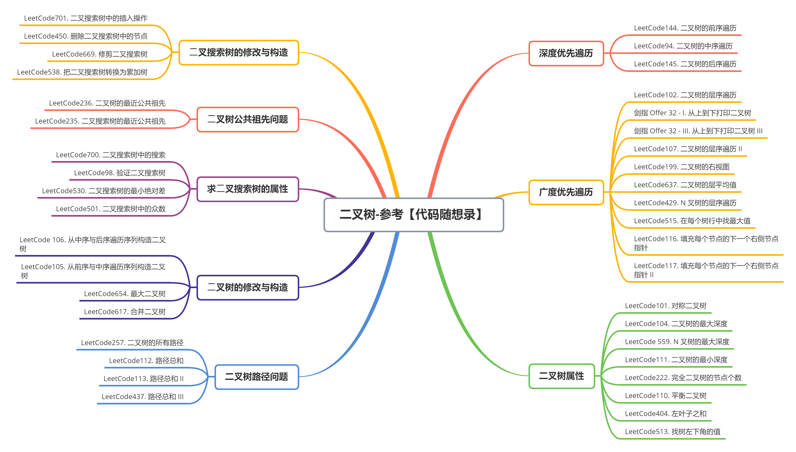
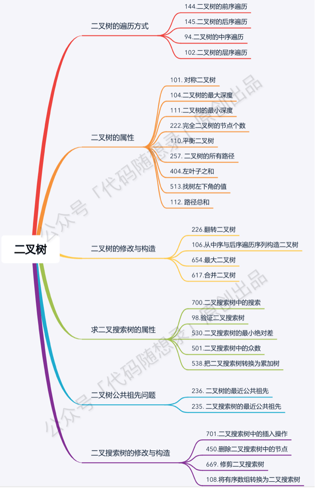
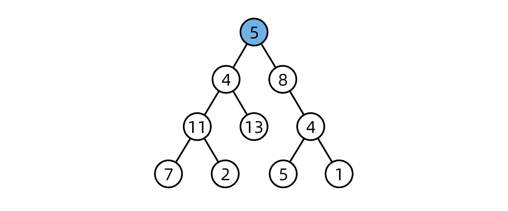
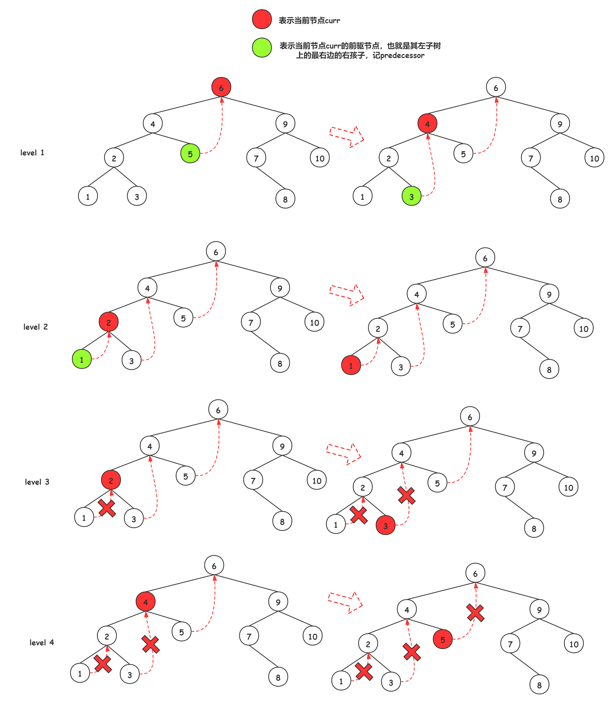

友情支持
如果您觉得这个笔记对您有所帮助，看在D瓜哥码这么多字的辛苦上，请友情支持一下，D瓜哥感激不尽，😜
|
|


有些打赏的朋友希望可以加个好友，欢迎关注D 瓜哥的微信公众号，这样就可以通过公众号的回复直接给我发信息。

公众号的微信号是: jikerizhi。因为众所周知的原因，有时图片加载不出来。 如果图片加载不出来可以直接通过搜索微信号来查找我的公众号。 |
Tree 树


树的遍历，如果用递归，代码写起来很简单。但是用遍历，又该如何做呢？
凡是用递归能解决的问题，都可以使用遍历来解决。用递归来求解问题，无非就是使用了方法栈来保存相关信息。同样，可以使用 Stack 来自己动手维护这些信息。例如：

搜索二叉树，一个隐含的性质是如果中序遍历，其值是单调递增的。所以，如果两个节点交换位置了，则第一个错误节点是比较大的节点（后面的跑前面了），第二个错误节点为较小的节点（后面的跑前面了）。如果是相邻节点交换，也是类似。
将一棵搜索二叉树按后序遍历生成一个数组。那么，数组最后一个元素就是根节点，同时，从后向前遍历，第一个小于根节点值的地方就是左右树的分界线。然后再递归解析。就可以重建这棵搜索二叉树了。
社区里有人宣称： 中序遍历团灭系列二叉搜索树问题。这点可以尝试一下：
-
94. 二叉树的中序遍历 中序遍历二叉树
-
530. 二叉搜索树的最小绝对差 二叉搜索树的最小绝对差
-
230. 二叉搜索树中第 K 小的元素 二叉搜索树中第k小的元素
-
501. Find Mode in Binary Search Tree 二叉搜索树中的众数
-
[0938-range-sum-of-bst] 二叉搜索树的范围和
-
[0653-two-sum-iv-input-is-a-bst] 两数之和IV-输入BST
-
98. 验证二叉搜索树 验证二叉搜索树
需要加强的内容
-
基于 Morris 遍历的前序和后序遍历练习
-
前中后根遍历的非递归实现
-
利用 Morris 求树的最小深度： 111. Minimum Depth of Binary Tree，尝试一下最大深度。
技巧或者隐藏知识点
-
非递归法后序遍历，可以用一个取巧的办法，套用一下前序遍历，前序遍历是根左右，后序遍历是左右根，我们只需要将前序遍历的结果反转一下，就是根左右。如果使用Java实现，可以在链表上做文章，将尾插改成头插也是一样的效果。
-
归并排序和二叉树后根遍历的递归顺序是一样的。
Morris 遍历
二叉搜索树相关的的一些题目，很可能就会利用中序遍历是升序序列的特性来处理一下问题。那么，在时间复杂度相同，但空间复杂度都特别优秀的 Morris 遍历就是一个很好的选择。

在 94. 二叉树的中序遍历 - 动画演示+三种实现 中的“变形”莫尔斯算法则展示了莫尔斯算法的另一种 有趣用法。
树形 DP 套路
树形 DP 套路使用前提：如果题目求解目标是 S 规则，则求解流程可以定成以每一个节点为头节点的子树在 S 规则下的每一个答案，并且最终答案一定在其中。
-
以某个节点 X 为头节点的子树中，分析答案有哪些可能性，并且这种分析是以 X 的左子树、X 的右子树和 X 整棵树的角度来考虑可能性的。
-
根据第一步的可能性分析，列出所有需要的信息。
-
合并第二步的信息，对左树和右树提出同样的要求，并写出信息结构。
-
设计递归函数，递归函数是处理以 X 为头节点的情况下的答案，包括设计递归的 base case，默认直接得到左树和右树的所有信息，以及把可能性整合，并且要返回第三步的信息结构这四个小步骤。
路径问题
问题分类
二叉树路径的问题大致可以分为两类：
-
自顶向下：顾名思义，就是从某一个节点(不一定是根节点)，从上向下寻找路径，到某一个节点(不一定是叶节点)结束。而继续细分的话还可以分成一般路径与给定和的路径。
-
非自顶向下：就是从任意节点到任意节点的路径，不需要自顶向下。
解题模板
这类题通常用深度优先搜索(DFS)和广度优先搜索(BFS)解决，BFS较DFS繁琐，这里为了简洁只展现DFS代码 下面是我对两类题目的分析与模板
一、自顶而下：
// **一般路径**
vector<vector<int>>res;
void dfs(TreeNode*root,vector<int>path)
{
if(!root) return; //根节点为空直接返回
path.push_back(root->val); //作出选择
if(!root->left && !root->right) //如果到叶节点
{
res.push_back(path);
return;
}
dfs(root->left,path); //继续递归
dfs(root->right,path);
}
// **给定和的路径**
void dfs(TreeNode*root, int sum, vector<int> path)
{
if (!root)
return;
sum -= root->val;
path.push_back(root->val);
if (!root->left && !root->right && sum == 0)
{
res.push_back(path);
return;
}
dfs(root->left, sum, path);
dfs(root->right, sum, path);
}这类题型DFS注意点：
-
如果是找路径和等于给定
target的路径的，那么可以不用新增一个临时变量curSum来判断当前路径和，只需要用给定和target减去节点值，最终结束条件判断target==0即可 -
是否要回溯：二叉树的问题大部分是不需要回溯的，原因如下：
二叉树的递归部分：dfs(root→left),dfs(root→right)已经把可能的路径穷尽了， 因此到任意叶节点的路径只可能有一条，绝对不可能出现另外的路径也到这个满足条件的叶节点的；
而对比二维数组(例如迷宫问题)的DFS，for循环向四个方向查找每次只能朝向一个方向，并没有穷尽路径， 因此某一个满足条件的点可能是有多条路径到该点的
并且visited数组标记已经走过的路径是会受到另外路径是否访问的影响，这时候必须回溯
-
找到路径后是否要return：取决于题目是否要求找到叶节点满足条件的路径，如果必须到叶节点，那么就要return；但如果是到任意节点都可以，那么必不能return，因为这条路径下面还可能有更深的路径满足条件，还要在此基础上继续递归
-
是否要双重递归(即调用根节点的dfs函数后，继续调用根左右节点的pathsum函数)：看题目要不要求从根节点开始的，还是从任意节点开始
二、非自顶而下：
这类题目一般解题思路如下：
设计一个辅助函数 maxPath，调用自身求出以一个节点为根节点的左侧最长路径 left 和右侧最长路径 right，那么经过该节点的最长路径就是 left+right
接着只需要从根节点开始dfs,不断比较更新全局变量即可
int res=0;
int maxPath(TreeNode *root) //以root为路径起始点的最长路径
{
if (!root)
return 0;
int left=maxPath(root->left);
int right=maxPath(root->right);
res = max(res, left + right + root->val); //更新全局变量
return max(left, right); //返回左右路径较长者
}这类题型DFS注意点：
-
left,right代表的含义要根据题目所求设置，比如最长路径、最大路径和等等
-
全局变量res的初值设置是0还是INT_MIN要看题目节点是否存在负值,如果存在就用INT_MIN，否则就是0
-
注意两点之间路径为1，因此一个点是不能构成路径的
经典题目
-
106. Construct Binary Tree from Inorder and Postorder Traversal
-
[0426-convert-binary-search-tree-to-sorted-doubly-linked-list]
-
[0558-logical-or-of-two-binary-grids-represented-as-quad-trees]
-
[0889-construct-binary-tree-from-preorder-and-postorder-traversal]
-
[1379-find-a-corresponding-node-of-a-binary-tree-in-a-clone-of-that-tree]
-
[1430-check-if-a-string-is-a-valid-sequence-from-root-to-leaves-path-in-a-binary-tree]
-
[2096-step-by-step-directions-from-a-binary-tree-node-to-another]
-
[2471-minimum-number-of-operations-to-sort-a-binary-tree-by-level]
-
[3067-count-pairs-of-connectable-servers-in-a-weighted-tree-network]
-
[3372-maximize-the-number-of-target-nodes-after-connecting-trees-i]
-
[3373-maximize-the-number-of-target-nodes-after-connecting-trees-ii]